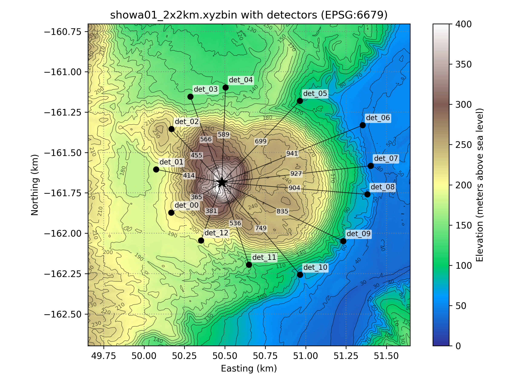
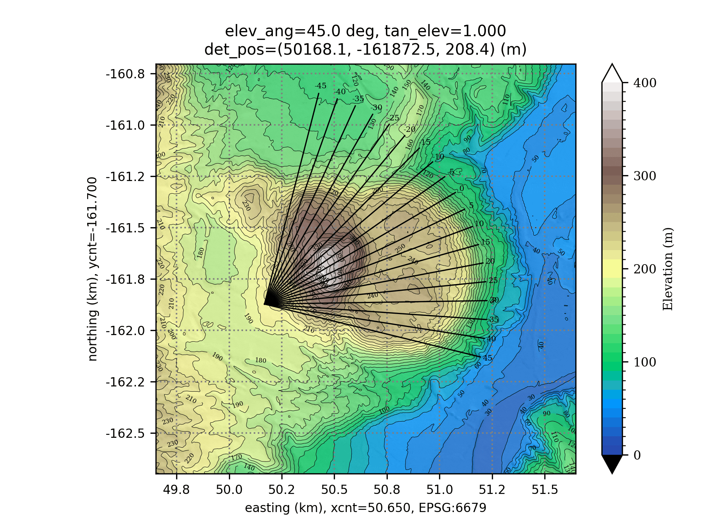
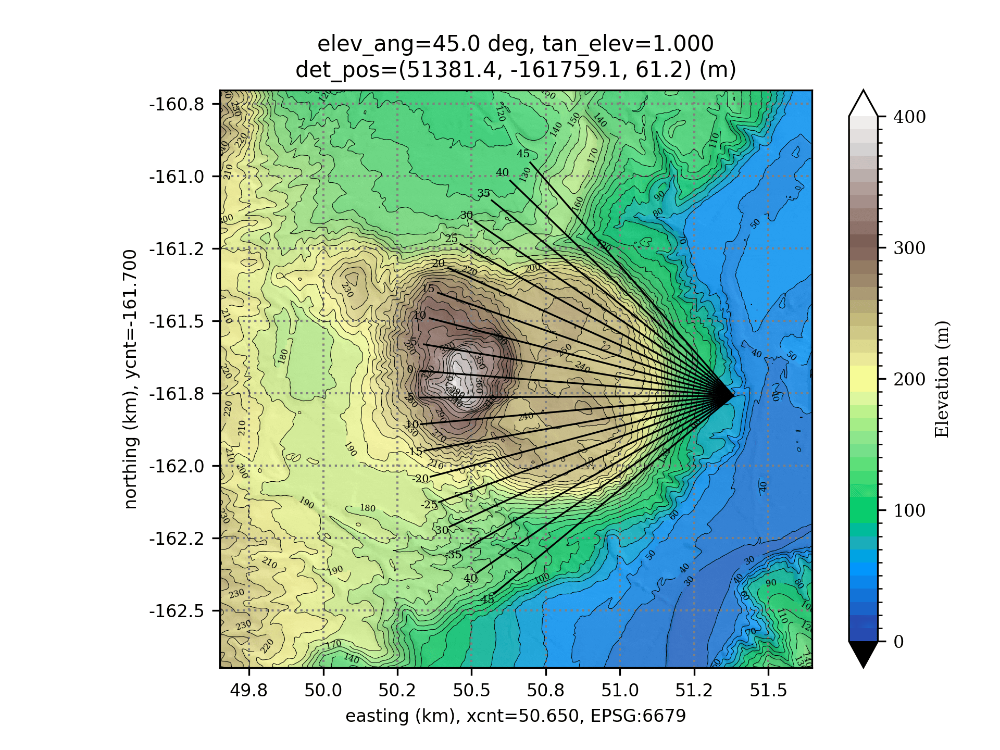

muonith-path-view¶
External repository
muonith-path-view is maintained in a separate repository. This page documents its stable interface for use with MUONITH.
Overview¶
muonith-path-view visualizes muon paths through terrain using DEM (Digital Elevation Model) data. For each elevation angle, it draws ray paths from a detector position, color-coding air (above ground) and rock (below ground) segments on a topographic map. The output is a set of PNG images assembled into a GIF animation and a multi-page PDF.
This tool helps verify detector placement and angular coverage before running the MUONITH pipeline.
{kind=link}

{kind=link}

{kind=link}

All beams in one frame share the same elevation angle
Each frame fixes one elevation angle \(\theta_{\mathrm{elev}}\) and sweeps the azimuth \(\phi\), so the drawn beams lie on a cone of constant physical elevation — they are not contained in a single plane. Each beam direction is the unit vector \((v_x, v_y, v_z) = (\cos\theta_{\mathrm{elev}}\cos\phi,\ \cos\theta_{\mathrm{elev}}\sin\phi,\ \sin\theta_{\mathrm{elev}})\). This holds for every angle_unit mode (deg, rad, tangent); see direction_setup — Angle Configuration for the exact convention. This differs from MUONITH's DetectorPanel in Tangent mode, where the bin coordinates are slopes about the panel's forward axis (\(t_x = v_x/v_y\), \(t_y = v_z/v_y\)): a row of constant \(t_y\) is a tilted plane of directions, not a cone of constant elevation; see From (tx, ty) to a Ray Direction.
Dependencies¶
| Package | Purpose |
|---|---|
| Python ≥ 3.10 | Runtime |
| numpy | Array computation |
| matplotlib | Map rendering (pcolormesh, contour, hillshade) |
| pyproj | CRS transformation |
| json5 | JSON5 config parser |
| rasterio | GeoTIFF reading |
| scipy | RegularGridInterpolator for DEM queries (a slow fallback is used if absent) |
| ImageMagick | convert command for PDF/GIF generation |
The Python packages are declared in pyproject.toml and pinned in uv.lock. ImageMagick is a system package and is not covered by either.
Installation¶
cd muonith-path-view
# Create .venv and install the pinned dependencies
uv sync
# ImageMagick
sudo apt install imagemagick # Ubuntu/Debian
brew install imagemagick # macOS (Homebrew)
uv sync creates .venv/ in the repository root. The bundled .envrc puts .venv/bin on the PATH, so with direnv installed (direnv allow on first entry) every python3 call in the repository uses that environment. Without direnv, either activate it (source .venv/bin/activate) or prefix commands with uv run:
uv run python3 scripts/mp_pypathviewer_pdf.py params/tutorial.json5
Quick Start¶
Run the bundled tutorial (no GeoTIFF to prepare)¶
muonith-path-view ships a self-contained example under examples/tutorial/: a synthetic DEM (tutorial-5m.g2zbin, and the identical grid as tutorial-5m.tif) together with 11 detector parameter files under examples/tutorial/detparams/. Nothing has to be downloaded or converted, so a fresh clone runs as-is:
cd muonith-path-view
python3 scripts/mp_pypathviewer_pdf.py params/tutorial.json5
Eleven detectors × 16 elevation angles are rendered (about one minute with num_threads: 8). The PNGs land in projects/tutorial/<det_name>/ as fig_elev00.0.png … fig_elev45.0.png, and the per-detector animations and documents are collected in projects/tutorial/gif/ and projects/tutorial/pdf/.
Hillshade (relief shading) can be toggled on the command line. These flags override rendering.shade and rendering.shade_alpha in the config file:
python3 scripts/mp_pypathviewer_pdf.py params/tutorial.json5 --shade --shade-alpha 0.4
python3 scripts/mp_pypathviewer_pdf.py params/tutorial.json5 --no-shade
The tutorial DEM is synthetic
The grid is a synthetic primitive shape, not derived from any third-party map data — which is why it can be redistributed. It has no real-world location. EPSG:6677 (JGD2011 Zone 9) is simply borrowed because muonith-path-view only needs path lengths in meters, so any real projected metric CRS will do. A made-up code (e.g. 9999) is rejected.
To exercise the GeoTIFF path with the same terrain, point input_dem at examples/tutorial/tutorial-5m.tif and delete input_dem_epsg — a GeoTIFF embeds its own CRS. Both files read back as the same grid.
Use your own DEM¶
Set file_path.input_dem to your own file. A GeoTIFF carries its own CRS; a .g2zbin grid does not, so file_path.input_dem_epsg must be declared explicitly:
// GeoTIFF — CRS is read from the file
"input_dem": "path/to/my_dem.tif",
// g2zbin — CRS must be given (real projected metric CRS)
"input_dem": "path/to/my_dem.g2zbin",
"input_dem_epsg": 6677,
The DEM CRS must match detector_setup.epsg_system.epsg_code_output. Then run:
python3 scripts/mp_pypathviewer_pdf.py params/my_config.json5
Configuration¶
Configuration files are stored in params/ as JSON5 (.json5) or JSON (.json). JSON5 supports comments (//, /* */) and trailing commas.
Top-Level Parameters¶
| Parameter | Default | Description |
|---|---|---|
num_threads |
— | Number of parallel subprocesses for PNG generation (capped to logical cores − 1) |
skip_making_png |
false |
If true, reuse existing PNGs (skip generation) |
file_path — Input/Output Paths¶
| Parameter | Description |
|---|---|
input_dem |
Path to the input DEM file (GeoTIFF, .g2zbin, or text) |
input_dem_epsg |
EPSG code of the DEM grid. Required for .g2zbin (which stores no CRS); omit for GeoTIFF |
input_dem_nodata |
Value marking missing elevation in the input grid (e.g. -9999.0) |
output_dir |
Output directory for PNG, PDF, GIF |
sub_process_python_path |
Path to sub_pathviewer.py |
out_pdf_header_name |
Filename prefix for PDF output |
out_gif_header_name |
Filename prefix for GIF output |
outlog |
Path to the general log file |
error_log |
Path to the error log file |
log_mode |
Log write mode: "overwrite", "append", or "archive" |
rendering — Display Settings¶
| Parameter | Description |
|---|---|
dpi |
Output resolution (dots per inch) |
gif_delay_msec |
Frame interval for GIF animation [ms] |
colormap |
Matplotlib colormap name (e.g., "terrain") |
color_over / color_under / color_nodata |
Colors for values above max / below min / NaN |
n_grad |
Number of discrete color levels |
vmin, vmax |
Elevation range for colormap [m] |
shade |
Overlay hillshade (relief shading) on the elevation colors. Default true. Overridden by --shade / --no-shade |
shade_alpha |
Hillshade opacity (0.0 = invisible, 1.0 = opaque). Default 0.2. Overridden by --shade-alpha |
shade_azimuth_deg |
Light direction, degrees clockwise from north. Default 315 |
shade_altitude_deg |
Light height above the horizon [deg]. Default 45 |
shade_vert_exag |
Vertical exaggeration applied to the elevation before shading. Default 1.0 |
x_wid, y_wid |
Half-width of the display window [m] |
xy_unit |
Axis label unit: "m" or "km" |
fit_xy_size |
If true, clip axis range to actual data extent |
xy_offset_center |
If true, shift coordinates so the center becomes (0, 0) |
grid |
Show grid lines (true / false) |
grid_color, grid_linewidth, grid_linestyle |
Grid line appearance |
detector_setup — Detector and Path Settings¶
epsg_system — Coordinate Reference System¶
| Parameter | Description |
|---|---|
epsg_code_input |
EPSG code for input detector coordinates |
epsg_code_output |
EPSG code for internal processing (must be a projected/metric CRS) |
All coordinates are transformed to epsg_code_output for processing:
GeoTIFF → CRS from file metadata → must match epsg_code_output
det_info_files → no CRS → read as epsg_code_input
x_cnt / y_cnt → epsg_code_center → transformed to epsg_code_output
Common EPSG codes:
| Code | CRS |
|---|---|
| 4326 | WGS84 (latitude/longitude) |
| 6676 | JGD2011 Zone 8 |
| 6677 | JGD2011 Zone 9 |
| 6679 | JGD2011 Zone 11 |
det_info_files — External Detector Files (optional)¶
When specified, detector coordinates are loaded from external JSON5 files. This allows reusing the same detector parameter files used by MUONITH:
"det_info_files": [
"/path/to/det_00.json5",
"/path/to/det_01.json5"
]
Each external file must contain a DETECTOR_PARAMETERS key:
{
"DETECTOR_PARAMETERS": {
"name": "det_00",
"x": 50168.1, // → x_det
"y": -161872.5, // → y_det
"z": 208.4, // → z_det
"yaw_deg": -22.031 // → azimuth_center
}
}
When det_info_files is used, the merge behavior is:
| Parameter | Source |
|---|---|
x_det, y_det, z_det |
External file (det_info_files) |
epsg_code_input, epsg_code_output |
Config file (epsg_system) |
direction_setup, line_path |
Config file |
When multiple detector files are specified, each detector is processed sequentially with output in <output_dir>/<det_name>/.
direction_setup — Angle Configuration¶
| Parameter | Description |
|---|---|
angle_unit |
Unit for angle values: "deg", "rad", or "tangent" |
azimuth_zero |
Reference direction for azimuth = 0: "north" or "east" |
azimuth_center |
Azimuth offset (overridden by yaw_deg from det_info_files) |
azimuth_mode |
"interval" for [start, end, step] or "array" for explicit list |
azimuth_range |
Azimuth sweep range, e.g., [-45, 45, 5] |
elevation_mode |
"interval" or "array" |
elevation_range |
Elevation sweep range, e.g., [45, 0, -3] (high → low) |
Each beam direction is a unit vector built from one elevation angle \(\theta_{\mathrm{elev}}\) and one azimuth angle \(\phi\):
where \(\phi\) is the internal azimuth after the azimuth_zero / azimuth_center conversions. The elevation \(\theta_{\mathrm{elev}}\) is fixed while the azimuth is swept, so the beams for one elevation value lie on a cone of constant physical elevation in every angle_unit mode.
angle_unit selects how the numbers in azimuth_range / elevation_range are read, for both azimuth and elevation. Below, \(u\) denotes each raw number written in those ranges:
angle_unit |
Interpretation of each value \(u\) |
|---|---|
deg |
angle in degrees |
rad |
angle in radians |
tangent |
slope: the angle is \(\arctan u\). Equal steps in \(u\) give unequal angular steps. |
Note: when angle_unit is not deg, the azimuth_center offset is added as radians.
Comparison with MUONITH's DetectorPanel (see From (tx, ty) to a Ray Direction); \(u\) denotes each raw number written in azimuth_range / elevation_range (see the table above):
| Tool / mode | Direction from bin values | Row of constant vertical value |
|---|---|---|
muonith-path-view, every angle_unit |
spherical, \(v_z = \sin\theta_{\mathrm{elev}}\) (tangent only converts the input, \(\theta_{\mathrm{elev}} = \arctan u\)) |
cone of constant elevation |
MUONITH DetectorPanel, Degree / Radian |
spherical, \(v_z = \sin t_y\) | cone of constant elevation |
MUONITH DetectorPanel, Tangent |
slopes, \(t_y = v_z / v_y\) | tilted plane |
line_path — Ray Path Rendering¶
| Parameter | Description |
|---|---|
min |
Minimum path distance from detector [m] |
max |
Maximum path distance from detector [m] |
pitch |
Distance step along the path [m] |
air_path_width, air_path_color, air_path_alpha |
Style for above-ground segments |
rock_path_width, rock_path_color, rock_path_alpha |
Style for below-ground segments |
charactor_setting — Typography¶
| Parameter | Description |
|---|---|
title_fontsize |
Font size for plot title [pt] |
azimuth_fontsize, azimuth_fontcolor |
Font size and color for azimuth annotations |
xaxis_tick_fontsize, yaxis_tick_fontsize |
Tick label font sizes |
xaxis_title_fontsize, yaxis_title_fontsize |
Axis title font sizes |
caxis_tick_fontsize, caxis_title_fontsize |
Colorbar font sizes |
caxis_title |
Colorbar title text (e.g., "Elevation (m)") |
Full example: Showa-shinzan (params/showa.json5)
Every key is annotated inline. Paths are placeholders — replace them with your own.
{
// ==== Top-level ====
// Number of parallel subprocesses for PNG generation (capped to logical_cores - 1)
"num_threads": 25,
// If true, skip PNG generation and reuse existing PNGs (only if all PNGs already exist)
"skip_making_png": false,
"file_path": {
// Path to the input DEM. GeoTIFF carries its own CRS, so input_dem_epsg is omitted here
"input_dem": "path/to/showa_2x2km_cut.tif",
// Output directory for generated PNG, PDF, and GIF files
"output_dir": "projects/showa",
// Path to the subprocess script that renders each elevation angle as a PNG
"sub_process_python_path": "scripts/sub_pathviewer.py",
// Filename prefix for the output PDF (used in single-detector mode)
"out_pdf_header_name": "showa",
// Filename prefix for the output GIF
"out_gif_header_name": "showa",
// Path to the general output log file
"outlog": "projects/showa/tmp.log",
// Path to the error log file
"error_log": "projects/showa/ERROR.log",
// Log file write mode: "overwrite" replaces, "append" adds, "archive" rotates
"log_mode": "overwrite",
},
"rendering": {
// If true, shift all coordinates so that the center point becomes the origin (0,0)
"xy_offset_center": false,
// Resolution in dots per inch for PNG/PDF output
"dpi": 300,
// Frame delay in milliseconds for GIF animation
"gif_delay_msec": 1000,
// ==== Colormap ====
// Matplotlib colormap name for elevation visualization
"colormap": "terrain",
// Color for values exceeding vmax (matplotlib set_over)
"color_over": "white",
// Color for values below vmin (matplotlib set_under)
"color_under": "black",
// Color for NoData/NaN pixels (matplotlib set_bad)
"color_nodata": "silver",
// Number of discrete color gradient levels between vmin and vmax
"n_grad": 40,
// Minimum elevation value (meters) for colormap range
"vmin": 0,
// Maximum elevation value (meters) for colormap range. Showa-shinzan spans 0-400 m
"vmax": 400,
// ==== Hillshade ====
// If true, overlay a hillshade (relief shading) on the elevation colors.
// The command line options --shade / --no-shade override this.
"shade": true,
// Opacity of the hillshade overlay (0.0 = invisible, 1.0 = opaque).
// The command line option --shade-alpha overrides this.
"shade_alpha": 0.2,
// Direction the light comes from, in degrees clockwise from north
"shade_azimuth_deg": 315,
// Height of the light above the horizon, in degrees
"shade_altitude_deg": 45,
// Vertical exaggeration applied to the elevation before shading
"shade_vert_exag": 1.0,
// ==== Contour labels ====
// Contour label interval (meters)
"contour_label_interval": 10,
// Contour label font size (pt)
"contour_label_fontsize": 4,
// Contour label color
"contour_label_color": "black",
// ==== Grid ====
// Whether to display grid lines on the plot
"grid": true,
// Color of grid lines
"grid_color": "black",
// Width of grid lines in points
"grid_linewidth": 0.5,
// Line style for grid: "solid", "dashed", "dashdot", or "dotted"
"grid_linestyle": "dotted",
// ==== Axis ====
// Unit for axis labels: "m" for meters, "km" for kilometers
"xy_unit": "km",
// Font size (pt) for axis tick labels
"xy_tick_font_size": 8,
// Font size (pt) for axis title labels (e.g. "X (km)")
"xy_axis_title_font_size": 10,
// ==== Window ====
// Half-width of the plot window in meters (xmin = xcnt - x_wid, xmax = xcnt + x_wid)
"x_wid": 2000,
// Half-height of the plot window in meters (ymin = ycnt - y_wid, ymax = ycnt + y_wid)
"y_wid": 2000,
// If true, clip the axis range to the actual data extent (remove empty margins)
"fit_xy_size": true,
},
// Detector and path calculation settings
"detector_setup": {
// Coordinate reference system (EPSG codes) for coordinate transformation
"epsg_system": {
// EPSG code for the input detector coordinates
"epsg_code_input": "6679", // JGD2011 Zone 11
// EPSG code for the output plot coordinates (must be a metric/projected CRS)
"epsg_code_output": "6679",
},
// External detector files: each supplies x, y, z and yaw_deg (-> azimuth_center).
// 13 detectors around Showa-shinzan; these are the same files MUONITH uses.
"det_info_files": [
"path/to/detparams/det_00.json5",
"path/to/detparams/det_01.json5",
"path/to/detparams/det_02.json5",
"path/to/detparams/det_03.json5",
"path/to/detparams/det_04.json5",
"path/to/detparams/det_05.json5",
"path/to/detparams/det_06.json5",
"path/to/detparams/det_07.json5",
"path/to/detparams/det_08.json5",
"path/to/detparams/det_09.json5",
"path/to/detparams/det_10.json5",
"path/to/detparams/det_11.json5",
"path/to/detparams/det_12.json5",
],
// Direction/angle configuration for path calculation
"direction_setup": {
// Unit for angle values: "deg", "rad", or "tangent"
"angle_unit": "deg",
// Reference direction for azimuth=0: "north" or "east"
"azimuth_zero": "north",
// azimuth_center is loaded from each det_info_file (yaw_deg)
// Azimuth generation mode: "array" for explicit list, "interval" for [start, end, step]
"azimuth_mode": "interval",
// Azimuth sweep range as [start, end, step]: +-45 deg in 5 deg steps
"azimuth_range": [-45, 45, 5],
// Elevation generation mode: "array" for explicit list, "interval" for [start, end, step]
"elevation_mode": "interval",
// Elevation sweep range as [start, end, step]: 45 deg down to 0 deg in 3 deg steps
"elevation_range": [45, 0, -3],
},
// Path line rendering parameters for the ray-tracing visualization
"line_path": {
// Minimum path distance (meters) from the detector
"min": 0.0,
// Maximum path distance (meters) from the detector
"max": 1500.0,
// Distance step/interval (meters) along the path
"pitch": 5.0,
// Line width (points) for the air (above-ground) segment of the path
"air_path_width": 0.8,
// Color for the air (above-ground) segment of the path
"air_path_color": "black",
// Opacity for the air segment (0.0 = transparent, 1.0 = opaque)
"air_path_alpha": 1.0,
// Line width (points) for the rock (below-ground) segment of the path
"rock_path_width": 1.5,
// Color for the rock (below-ground) segment of the path
"rock_path_color": "white",
// Opacity for the rock segment (0.0 = transparent, 1.0 = opaque)
"rock_path_alpha": 0.5,
},
},
// Typography and text formatting settings for plot elements
"charactor_setting": {
// Scaling factor for beam path visualization relative to character size
"beam_path_factor": 1.03,
// Font size (pt) for the plot main title
"title_fontsize": 10,
// Font size (pt) for azimuth angle text annotations on the plot
"azimuth_fontsize": 5,
// Color for azimuth angle text annotations
"azimuth_fontcolor": "black",
// Font size (pt) for x-axis tick labels
"xaxis_tick_fontsize": 8,
// Font size (pt) for y-axis tick labels
"yaxis_tick_fontsize": 8,
// Font size (pt) for colorbar tick labels
"caxis_tick_fontsize": 8,
// Font size (pt) for x-axis title
"xaxis_title_fontsize": 8,
// Font size (pt) for y-axis title
"yaxis_title_fontsize": 8,
// Font size (pt) for colorbar title
"caxis_title_fontsize": 8,
// Text displayed as the colorbar title
"caxis_title": "Elevation (m)",
},
}
Processing Flow¶
Config file (JSON5) DEM (GeoTIFF / .g2zbin / text)
│ │
└───────────────────────┬───────────────────────┘
│
▼
mp_pypathviewer_pdf.py
│
┌─────────────────────────┼─────────────────────────┐
▼ ▼ ▼
sub_pathviewer.py sub_pathviewer.py sub_pathviewer.py
(elev 45°) (elev 42°) (elev 39°) ...
│ │ │
▼ ▼ ▼
PNG PNG PNG
│ │ │
└─────────────────────────┼─────────────────────────┘
│
┌───────────────┴───────────────┐
▼ ▼
PDF GIF
(ImageMagick) (ImageMagick)
Each sub_pathviewer.py invocation:
- Loads the DEM and builds a 2D elevation grid
- For each azimuth angle, traces a ray path from the detector
- Classifies each path segment as air (above terrain) or rock (below terrain)
- Draws the segments with distinct colors and line widths
- Saves the result as a PNG
Output Files¶
| Format | Filename pattern | Description |
|---|---|---|
| PNG | fig_elev45.0.png |
Topographic map with ray paths for one elevation angle |
| GIF | <det_name>.gif |
Animated sweep through elevation angles |
<det_name>.pdf |
Multi-page document (one page per elevation angle) |
In multi-detector mode, the PNGs are grouped per detector and the animations and documents are collected together:
<output_dir>/
├── det_00/
│ ├── fig_elev00.0.png
│ ├── ...
│ └── fig_elev45.0.png
├── det_01/
│ └── ...
├── gif/
│ ├── det_00.gif ...
└── pdf/
├── det_00.pdf ...
DEM Input Formats¶
muonith-path-view automatically detects the input format based on the file extension:
| Format | Extension | Description |
|---|---|---|
| GeoTIFF | .tif, .tiff |
Georeferenced raster with embedded CRS. CRS must match epsg_code_output. |
| Binary | .g2zbin |
Compact uniform-grid binary: magic + Grid2d header (x/y axes) + row-major z array. Stores no CRS, so input_dem_epsg must be set in the config. See Input Data. |
| Text | .xyz, .dem, etc. |
Space-separated x y z values, one point per line |
To convert a .g2zbin grid into a GeoTIFF, run the bundled converter with the EPSG code of the grid as the third argument. This is how examples/tutorial/tutorial-5m.tif was produced:
python3 scripts/g2zbin_to_geotiff.py examples/tutorial/tutorial-5m.g2zbin examples/tutorial/tutorial-5m.tif 6677
The EPSG code must be a real projected metre CRS; a made-up code (e.g. 9999) is rejected because it cannot be resolved.
Supplementary Tool: azimuth.py¶
Calculates the azimuth angle between two points:
python3 scripts/azimuth.py
Troubleshooting¶
ImageMagick Policy Error¶
If PDF or GIF generation fails with a permission error, check the ImageMagick security policy:
# Policy file location
/etc/ImageMagick-6/policy.xml
# or
/etc/ImageMagick-7/policy.xml
Look for <policy domain="coder" rights="none" pattern="PDF" /> and change rights to "read|write".
Out of Memory¶
When processing large DEMs, reduce num_threads or crop the DEM to a smaller region. Each subprocess loads the full DEM into memory, so total memory usage scales with the number of threads.